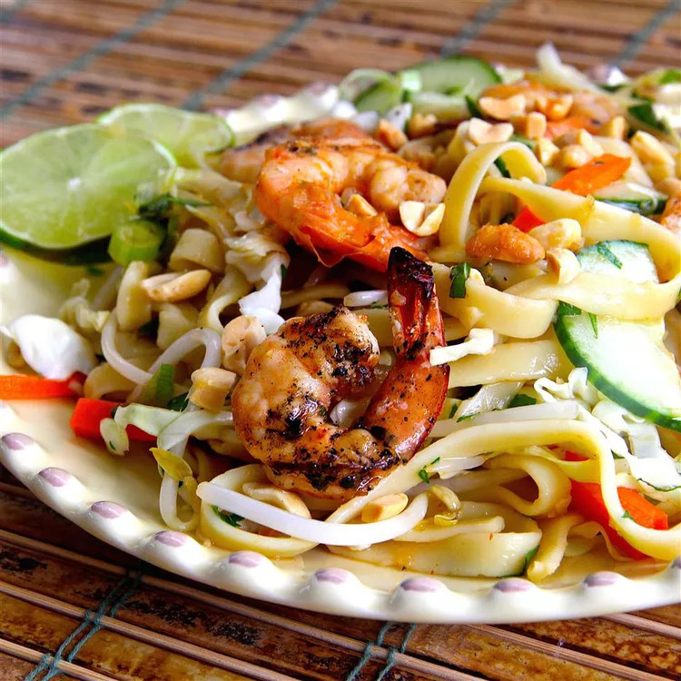

Saigon Noodle Salad

This Vietnamese-style noodle salad is my 'too hot to cook' staple.
Ingredients
Dressing
- ¼ cup water, or more to taste
- 3 tablespoons lime juice
- 3 tablespoons fish sauce
- 3 tablespoons brown sugar, or more to taste
- 1 clove garlic, minced
- 1 teaspoon minced fresh ginger root
- ½ teaspoon Sriracha chile sauce
Salad
- 1 (8 ounce) package (linguine-width) rice noodles
- 2 cups thinly sliced Napa (Chinese) cabbage
- 1 ½ cups matchstick-cut carrots
- 8 ounces grilled shrimp
- 1 cup bean sprouts
- ½ English cucumber, halved lengthwise and cut into thin slices
- 2 green onions, thinly sliced
- 2 ⅔ tablespoons chopped fresh mint
- 2 ⅔ tablespoons chopped fresh cilantro
- 2 ⅔ tablespoons chopped fresh basil
- ½ cup coarsely chopped peanuts
Steps
- Whisk water, lime juice, fish sauce, brown sugar, garlic, ginger, and Sriracha together in a bowl until the sugar is dissolved
- Bring a large pot of water to a full boil; remove from heat and soak rice noodles in the hot water for 1 minute. Stir to separate the noodles and continue soaking until the noodles are tender, about 3 minutes more. Drain noodles and rinse with cold water until cooled. Shake noodles in colander to drain as much water as possible
- Mix noodles, cabbage, carrots, shrimp, bean sprouts, cucumber slices, green onions, mint, cilantro, and basil together in a large bowl. Drizzle the dressing over the salad and toss to coat. Top with chopped peanuts
Back to main page